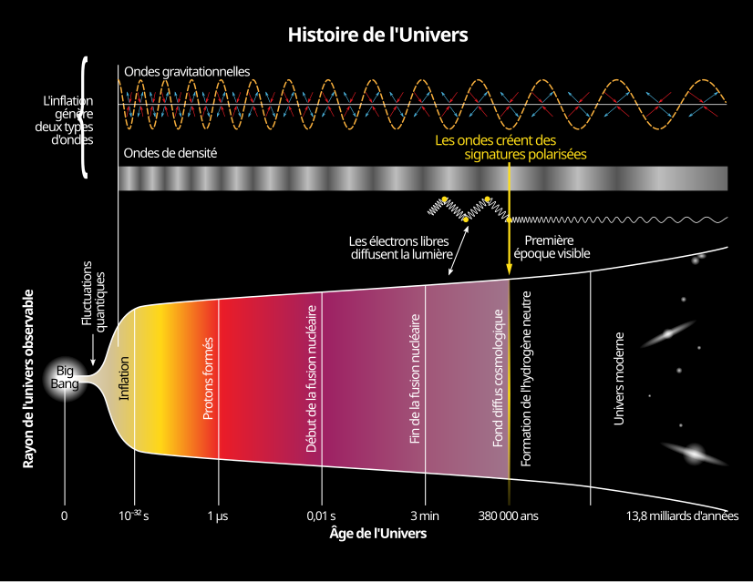

Une longue histoire de la matière
"De l’infiniment petit au vivant : un voyage à travers le temps et la matière."
1. Le Big Bang :
- Il y a environ 13,8 milliards d’années.
- Naissance de l’Univers, apparition des particules élémentaires.
- Formation des premiers atomes (hydrogène et hélium).
2. La naissance des étoiles :
- Les gaz s’assemblent par gravité pour former les étoiles.
- Les étoiles fabriquent de nouveaux éléments chimiques par fusion nucléaire.
- Explosion en supernova → dispersion des éléments dans l’espace.
3. La formation de la Terre :
- Il y a environ 4,5 milliards d’années.
- Accrétion de poussières et de gaz → naissance de notre planète.
- Apparition de l’eau et des premières conditions favorables à la vie.
4. L’émergence de la vie :
- Les premiers organismes vivants apparaissent dans les océans.
- L’évolution donne naissance à une grande diversité d’êtres vivants.
- L’homme, composé des mêmes atomes issus des étoiles, est une partie de cette histoire.
Sources :
- CNRS, NASA, Université de Genève
